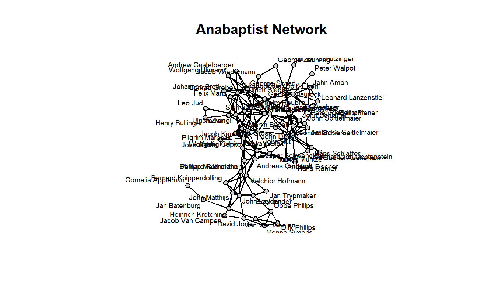
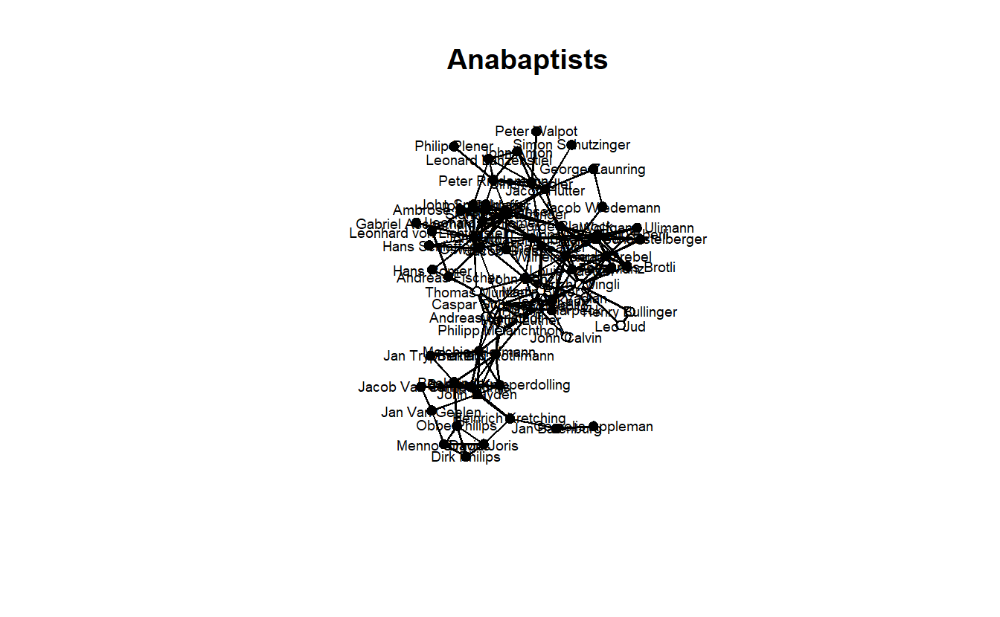
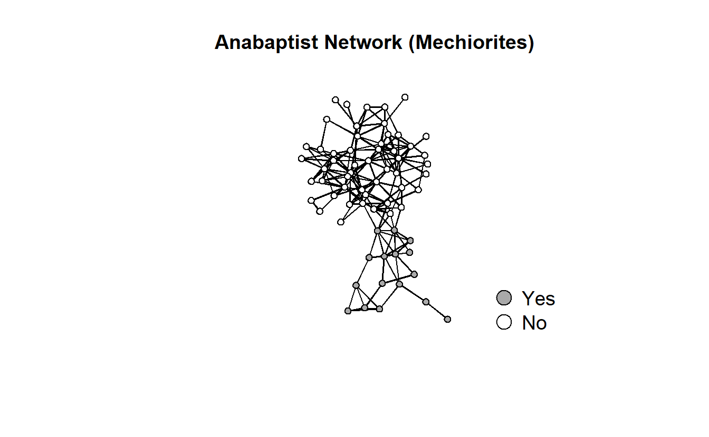
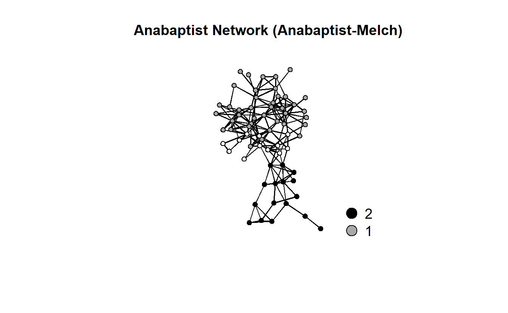

15 Exploratory Analysis
Remember to set your working directory or set up a project before getting started. We will start by exploring the data so go ahead and load the sna and network packages.
15.1 Load Libraries
library(sna)
library(network)At this point you should be familiar with the “Anabaptist” data set. In case you don’t remember, the data set includes 67 actors, 55 who were sixteenth century Anabaptist leaders and 12 who were prominent Protestant Reformation leaders (e.g., Martin Luther, John Calvin, Ulrich Zwingli, Martin Bucer, and Philip Melanchthon) that had contact with and influenced some of the Anabaptist leaders included in this data set. These data build on a smaller data set (Matthews et al., 2013) that did not include some leading Anabaptist leaders, such as Menno Simons, who is generally seen as the “founder” of the Amish and Mennonites.
For the exploratory analyses portion of this exercise, we will use the network at a single snapshot in time. We will import our “waves” or time slices later when we begin building our models. So for now, we need to import our static network and our attributes.
15.2 Import Data
anabaptists.net <- as.network(
read.paj("data/Anabaptist Leadership Network 67.net"),
directed = FALSE)We’ve stored our attributes as binary variables. We will bring them in as use the as.matrix() function to put them in a usable format. Once we’ve imported the attributes, we will use the set.vertex.attribute() function to set them as vertex attributes.
attributes <- read.csv("data/Anabaptist Attributes67.csv",
header = TRUE,
row.names = 1,
check.names = FALSE)
set.vertex.attribute(anabaptists.net, 'believers', attributes[, 1])
set.vertex.attribute(anabaptists.net, 'violent', attributes[, 2])
set.vertex.attribute(anabaptists.net, 'munster', attributes[, 3])
set.vertex.attribute(anabaptists.net, 'apocalyptic', attributes[, 4])
set.vertex.attribute(anabaptists.net, 'anabaptist', attributes[, 5])
set.vertex.attribute(anabaptists.net, 'melchiorite', attributes[, 6])
set.vertex.attribute(anabaptists.net, 'apocviolent', attributes[, 7])
set.vertex.attribute(anabaptists.net, 'apocnonviolent', attributes[, 8])
set.vertex.attribute(anabaptists.net, 'nonapocviolent', attributes[, 9])15.3 Network Plots
Let’s begin with some basic plots.
gplot(anabaptists.net,
label = network.vertex.names(anabaptists.net),
usearrows = FALSE,
label.col = "black",
label.cex = 0.6,
vertex.col = "light gray",
vertex.cex = 1,
main = "Anabaptist Network")
Go ahead and re-position the labels.
gplot(anabaptists.net,
label = network.vertex.names(anabaptists.net),
usearrows = FALSE,
label.col = "black",
label.cex = 0.6,
label.pos = 5,
vertex.col = "light gray",
vertex.cex = 1,
main = "Anabaptist Network")
Next, let’s color the nodes by a few attributes.
# Anabaptists
gplot(anabaptists.net,
label = network.vertex.names(anabaptists.net),
usearrows = FALSE,
label.col = "black",
label.cex = 0.6,
label.pos = 5,
vertex.col = attributes[, 5],
vertex.cex = 1,
main = "Anabaptists")
# Münster rebellion
gplot(anabaptists.net,
label = network.vertex.names(anabaptists.net),
usearrows = FALSE,
label.col = "black",
label.cex = 0.6,
label.pos = 5,
vertex.col = attributes[, 4],
vertex.cex = 1,
main = "Munster Rebellion")
Here’s another way to do something similar by creating vectors of attributes.
baptism.vec <- attributes[, 1]
violence.vec <- attributes[, 2]
munster.vec <- attributes[, 3]
apocalyptic.vec <- attributes[, 4]
anabaptist.vec <- attributes[, 5]
melchiorite.vec <- attributes[, 6]
y1525.vec <- attributes[, 10]
anabmunst.vec <- anabaptist.vec + munster.vec
anabmelch.vec <- anabaptist.vec + melchiorite.vecWe can change some of the default colors to help us explore the network visually.
# Change the default colors
baptism.vec[baptism.vec == 1] <- "dark gray"
baptism.vec[baptism.vec == 0] <- "white"
violence.vec[violence.vec == 1] <- "dark gray"
violence.vec[violence.vec == 0] <- "white"
munster.vec[munster.vec == 1] <- "black"
munster.vec[munster.vec == 0] <- "white"
apocalyptic.vec[apocalyptic.vec == 1] <- "dark gray"
apocalyptic.vec[apocalyptic.vec == 0] <- "white"
anabaptist.vec[anabaptist.vec == 1] <- "dark gray"
anabaptist.vec[anabaptist.vec == 0] <- "white"
melchiorite.vec[melchiorite.vec == 1] <- "dark gray"
melchiorite.vec[melchiorite.vec == 0] <- "white"
anabmunst.vec[anabmunst.vec == 2] <- "black"
anabmunst.vec[anabmunst.vec == 1] <- "dark gray"
anabmunst.vec[anabmunst.vec == 0] <- "white"
anabmelch.vec[anabmelch.vec == 2] <- "black"
anabmelch.vec[anabmelch.vec == 1] <- "dark gray"
anabmelch.vec[anabmelch.vec == 0] <- "white"Let’s visualize the entire network and use various attributes as visual cues.
# First get coordinates
set.seed(8675309)
coords <- network.layout.kamadakawai(anabaptists.net,
layout.par = NULL)
gplot(anabaptists.net,
usearrows = FALSE,
displayisolates = TRUE,
displaylabels = F,
vertex.col = anabaptist.vec,
coord = coords,
vertex.cex = 1,
gmode = "graph",
main = "Anabaptist Network")
legend(x = -3.0,
y = -3.1,
legend = c("Yes","No"),
pch = 21,
pt.bg = c("dark gray", "white"),
pt.cex = 2,
cex = 1.2,
bty = "n",
ncol = 1)
gplot(anabaptists.net,
usearrows = FALSE,
displayisolates = FALSE,
displaylabels = F,
vertex.col = melchiorite.vec,
vertex.cex = 1,
gmode = "graph",
coord = coords,
main = "Anabaptist Network (Mechiorites)")
legend(x = -3.0,
y = -3.1,
legend = c("Yes","No"),
pch = 21,
pt.bg = c("dark gray", "white"),
pt.cex = 2,
cex = 1.2,
bty = "n",
ncol = 1)
gplot(anabaptists.net,
usearrows = FALSE,
displayisolates = FALSE,
displaylabels = F,
vertex.col = munster.vec,
vertex.cex = 1,
gmode = "graph",
coord = coords,
main = "Anabaptist Network (Munster)")
legend(x = -3.0,
y = -3.1,
legend = c("1","0"),
pch = 21,
pt.bg = c("black", "white"),
pt.cex = 2,
cex = 1.2,
bty = "n",
ncol = 1)
gplot(anabaptists.net,
usearrows = FALSE,
displayisolates = FALSE,
displaylabels = F,
vertex.col = anabmelch.vec,
vertex.cex = 1,
gmode = "graph",
coord = coords,
main = "Anabaptist Network (Anabaptist-Melch)")
legend(x = -3.5,
y = -3.1,
legend = c("2","1", "0"),
pch = 21,
pt.bg = c("black", "dark gray", "white"),
pt.cex = 2,
cex = 1.2,
bty = "n",
ncol = 1)
Now, remember that we are working with undirected data here, so we cannot measure reciprocity and triad census in a meaningful way.